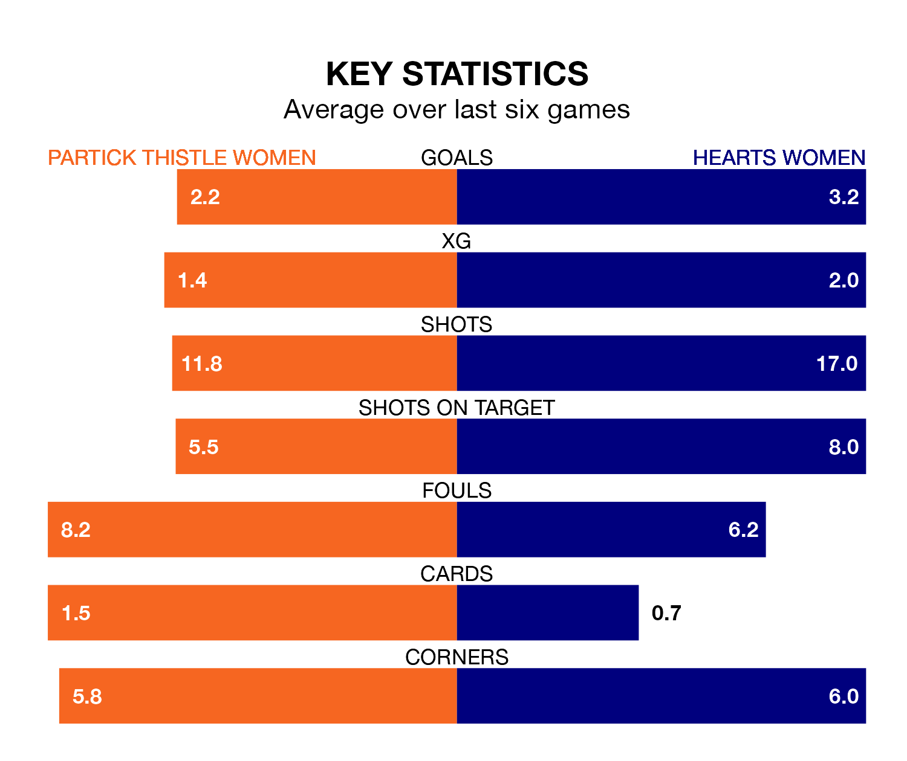

Hearts Women face a challenge to maintain their high-scoring form away against a tight Partick Thistle Women defence on Sunday.
With 37 goals in 14 games, Hearts are the joint-third-highest scorers in SWPL 1 ahead of the 1pm kick-off at Petershill Park.
They face a Thistle side who have scored 27 in 14 matches, but conceded only 17 goals, putting them fourth among the league's tightest defences – only Rangers Women, Celtic Women and Glasgow City Women have conceded fewer goals.
Partick Thistle are in fantastic form in SWPL 1, with five wins and one loss from their last six games.
With three wins and two draws over that period, Hearts' form is worse – they have taken 11 points from 18, compared to Thistle's 15.
With Megan Cunningham between the sticks, the hosts can rely on one of the league's safest pair of hands. She has kept four clean sheets in her nine appearances this season in SWPL 1.
In the away team's net, Lisa Maher-Rodgers has two clean sheets in three games.
Partick Thistle are fourth in the table after 14 games, of which they have won nine and lost five, earning 27 points.
Hearts are two places behind Partick Thistle in sixth, with seven wins and two draws putting them on 23 points.
Over the last two years, Partick Thistle and Hearts have played each other on seven occasions. Partick Thistle won one of them, Hearts five, and they drew once.
On average, Thistle scored 1.1 goals and Hearts 2.6 in those matches.
Their last meeting was on September 17, when Hearts won 6-1 at home.
Partick Thistle's last match was on November 26, a 4-2 win against Motherwell Women, with Imogen Longcake (two), Demi-Lee Falconer and Rachel Donaldson getting the goals for Thistle.
Hearts beat Hamilton Academical 6-1 last time out, also on November 26, with Katie Jayne Lockwood (four), Aimee Anderson and Georgia Timms on the scoresheet.
